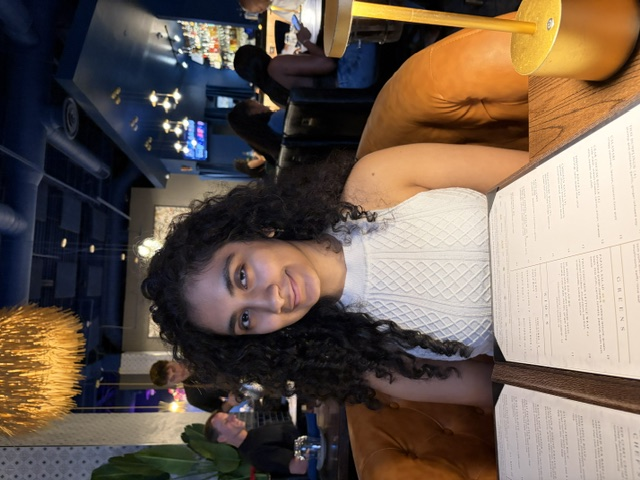
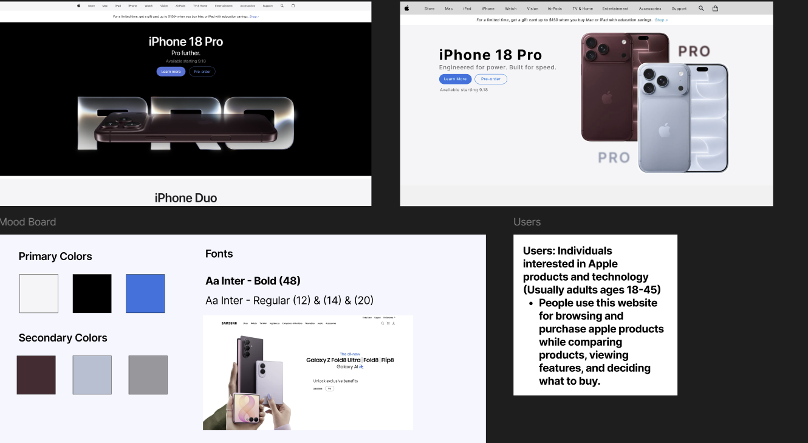
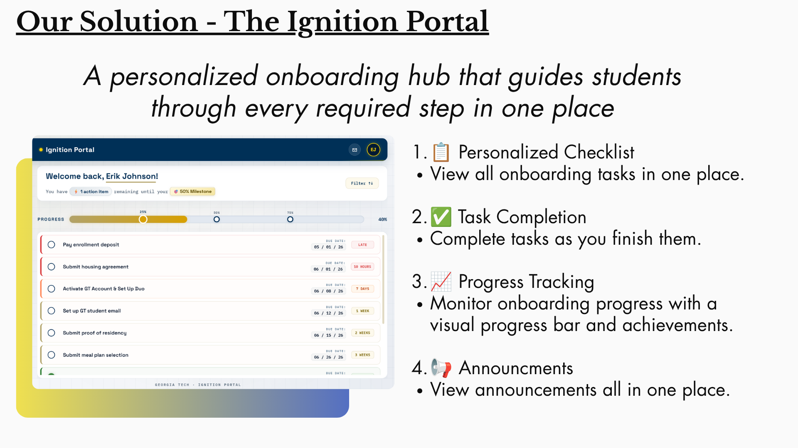
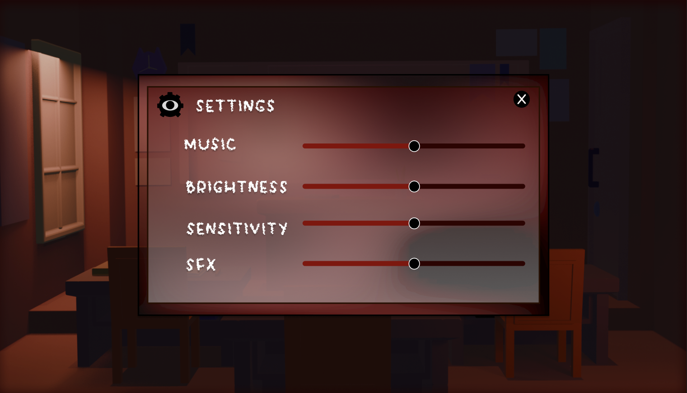

★ Featured
Computational Media · Georgia Tech
Hey, I'm Tanisi!
I like working where design meets technology.
I'm studying Computational Media at Georgia Tech. I like figuring out how things can work better and turning those ideas into something real.

● Open to internships
01 / Featured Projects
Work I'm proud of right now.
Three projects that show how I think across research, design, and build. Open any one to read the full story.

02 / Product Thinking
From User Insight to Product Decision
A short walkthrough of how I move from research to a product call. Follow the four stages, or jump to the one you care about.
How I work The same four moves run through all of my projects: understand the problem, design a response, build it, and look back to improve. Follow the stages to see how each one shows up in my actual work.
Before designing anything, I try to pin down the real problem and who it's for. Two projects started exactly here.
-
ER FastTrack Emergency-room triage support
I read how emergency departments actually sort patients before designing anything, and built the whole thing around one rule: patients report, the software organizes, and clinical staff decide. The tool never diagnoses or ranks patients on its own.
Shows: framing a problem with real domain constraints and a clear safety boundary. Read the case study →
-

Gather Visual reference discovery
With my partner Julia Hou, I grounded Gather in preliminary research first, building a user profile (Maya, a creative student) and synthesizing findings into four insight clusters before touching any screens.
Shows: starting from users and research rather than a solution. Read the case study →
With the problem framed, I move into research-driven UI/UX and prototyping, from mid-fidelity flows to polished screens.
-

Gather Research → mid-fi → hi-fi
I carried Gather from a mid-fidelity flow through to finished high-fidelity designs in Figma, where each insight cluster mapped to a real screen, with attribution built into every result rather than bolted on.
Shows: turning research into interaction and interface decisions. See the designs →
-

Bits of Good Bootcamp Figma design track
Through Georgia Tech's Bits of Good, I rebuild real product screens in Figma, Apple, Duolingo, Etsy (desktop and mobile), Pinterest, and Letterboxd, using Auto Layout and studying how strong interfaces hold together.
Shows: deliberate practice in UI craft, hierarchy, and prototyping. See the redesigns →
Design only matters once it's real. These three show collaboration, implementation, and hands-on technical work.
-

Ignition Portal Hackathon team project
At the GT IGNITE Hackathon, our three-person team took a survey finding (44 responses; "too many platforms" was the top struggle) to a working onboarding portal. I owned research and helped drive the UI and user flows, using Claude to prototype quickly.
Shows: teamwork and AI-assisted prototyping under time pressure. Read more →
-

Unraveling Game UI · GT VGDev
As one UI designer inside VGDev's 100+ member team, I design start screens, menus, a paranoia overlay, and a music toggle in Figma, keeping styling dark and tense while structure stays readable, and revising to match a shared direction.
Shows: contributing design inside a large collaborative team. Read more →
-

The Flower 2D platformer · GameMaker
A solo game I'm building in GameMaker (GML) with hand-drawn pixel art, movement and animation, double jump, health, collectibles, hazards, and slope physics.
Shows: end-to-end technical implementation on my own. Read more →
Looking back across the work, here's how I think about feedback, tradeoffs, and what I'd do next. The forward-looking items are clearly marked as ideas, not completed work.
Feedback & iteration
On Unraveling I revise my UI based on feedback from a 100+ person team; on Gather, research clusters shaped the design before I committed to screens.
Prioritization & tradeoffs
ER FastTrack is the clearest tradeoff: I deliberately kept the software non-diagnostic, accepting less "smart" behavior in exchange for safety and clinician trust.
Hypothetical next steps
Ideas, not done yet: usability testing on the Gather flows, finishing and play-testing The Flower, and expanding ER FastTrack's accessibility checks with real users.
The throughline: across research, design, and build, I try to start from a real need, make a deliberate tradeoff, and stay open to revising, which is exactly the product thinking I want to keep sharpening.
03 / Skills
What I work with.
- Interaction Design
- UI/UX Design
- Prototyping
- Wireframing
- Auto Layout
- User Research
- Accessibility
- Python
- Java
- GameMaker (GML)
- HTML / CSS / JS (AI-assisted)
- Figma
- Git & GitHub
- Kiro
- Claude
04 / Experience & Involvement
Where I've been building.
-
Bits of Good, Figma Design Track
Sept - Nov 2026Georgia Tech
- Learning interface design, prototyping, and visual hierarchy through weekly Figma exercises.
- Redesigned real product screens, including Duolingo profile pages and an Etsy checkout flow.
- Started Gather, a visual reference discovery concept, with my partner Julia Hou through this program.
-
VGDev, "Unraveling"
Sept 2026 - PresentGeorgia Tech
- Designing UI elements for a collaborative game made by GT's video game development club.
- Built a paranoia-themed overlay and an in-game music toggle in Figma to match the game's tone.
- Working within a team of more than 100 members and revising designs based on their feedback.
05 / Contact
Let's work on something.
I'm looking for internships and open to design or engineering collaborations. Email or LinkedIn is the quickest way to reach me.